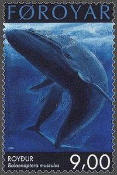

Paus biru diyakini merupakan hewan terbesar yang pernah diketahui. Sebagai perbandingan, dinosaurus terbesar yang pernah diketahui berasal dari masa Mesozoikum, yaitu Argentinosaurus, yang massanya diperkirakan sebesar 90 ton, meskipun vertebrata Amphicoelias fragillimus diduga memiliki massa 122 ton dan panjang 40–60 meter (yang masih kontroversial). Paus biru dewasa dapat memakan krill sebanyak 40 juta per hari.[42] Mereka selalu makan di wilayah dengan konsentrasi krill yang tinggi, sehingga kadang-kadang memakan kurang lebih 3.600 kilogram (7.900 pon) krill dalam satu hari. Kebutuhan energi paus biru dewasa dalam satu hari berada dalam kisaran 1,5 juta kilokalori. Perilaku makan mereka musiman. Paus biru mengisi perut mereka di perairan yang kaya akan krill di Antartika sebelum bermigrasi ke tempat pembiakan di perairan yang lebih hangat dan kurang kaya akan krill di dekat khatulistiwa. Paus biru dapat menerima energi 90 kali lebih besar dari yang dikeluarkan, sehingga memiliki cadangan energi yang besar. Berdasarkan perkiraan yang dibuat oleh Cummings dan Thompson (1971), ketika diukur relatif terhadap tekanan satu mikropaskal dalam satu meter, tekanan suara yang dibuat oleh paus biru tercatat antara 155 hingga 188 desibel. Seluruh kelompok paus biru melakukan panggilan pada frekuensi dasar antara 10 hingga 40 Hz; sebagai perbandingan, frekuensi terendah yang dapat didengar manusia adalah 20 Hz. Panggilan paus biru dapat berlangsung antara sepuluh hingga tiga puluh detik. Paus biru di tepi pantai Sri Lanka dilaporkan telah berkali-kali membuat "lagu" dengan empat not yang berlangsung selama dua menit. Karena sejauh ini fenomena tersebut tidak ditemui di antara populasi lain, peneliti meyakini bahwa nyanyian tersebut merupakan ciri khas subspesies B. m. brevicauda.
 klik disini untuk paus biru